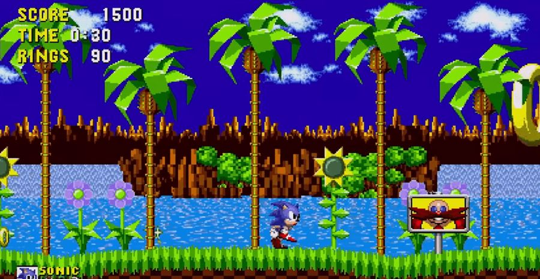
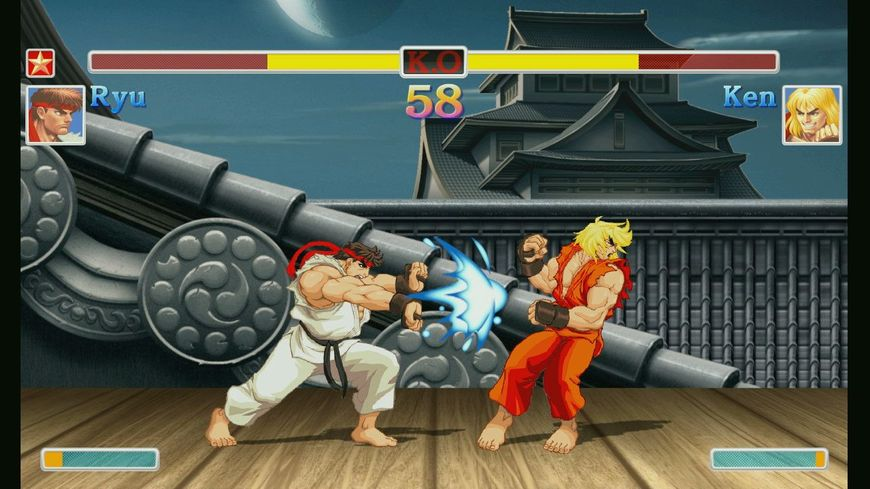

La deux c'est quoi
Les jeux 2D utilisent des graphismes plats, appelés sprites, sans dimension tridimensionnelle. Ce graphisme utilise les images numériques principalement issues de modèles en deux dimensions qui sont affichées sur un écran avec une seule perspective qui varie pour chaque genre de jeux 2d qui sont le défilement latéral, la vue de dessus et Pseudo 3d.
Different type :
La vue aerienne
Le Jeu en vue de dessus est un jeu avec une vue aérienne, il utilise un angle de caméra qui montre le joueur et la zone autour. Pour ce type de jeu, le personnage se positionne souvent au centre de l'écran.
Ce type de graphisme se trouve fréquemment dans les jeux de simulation, de gestion comme SimCity, Pokémon ou Railroad Tycoon, on peut aussi le trouver dans les genres jeux d'action ou d'action-aventure comme The Legend of Zelda et Grand Theft Auto.

Le défilement latéral
Un jeu de défilement latéral est un jeu vidéo dans lequel le point de vue est pris du côté, et les personnages à l'écran peuvent souvent se déplacer seulement à gauche et à droite. Les jeux de ce type utilisent la technologie d'affichage par ordinateur appelée scrolling, et parfois le défilement parallaxe, un technique qui déplace des différents décors, souvent à l'arrière-plan pour suggérer une certaine profondeur. Ce type de jeux est très populaire à son époque entre 1970 et 1980. Quelque exemple classique de jeux de défilement latéral : Sonic the Hedgehog, Super Mario Bros, Donkey kong, Space invader.
La pseudo 3d ou 2.5d
La Pseudo 3d ou 2.5d est un type de graphisme 2d qui utilise les projections graphiques et les techniques pour réaliser les « fausses 3D ». Généralement, ces jeux utilisent une forme de projection parallèle, le point de vue est fixe mais on peut voir plusieurs face d’un objet. Il y a plusieur technique pour cree la pseudo 3D comme la perspective isométrique/axonométrique qui est utiliser dans Les Sims et Diablo, le défilement parallaxe qui est utiliser pour Street Fighter II, la technique scaling pour Space Herrier et enfin la Skybox de Half-Life 2.
